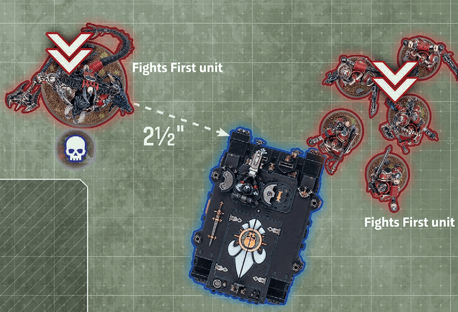
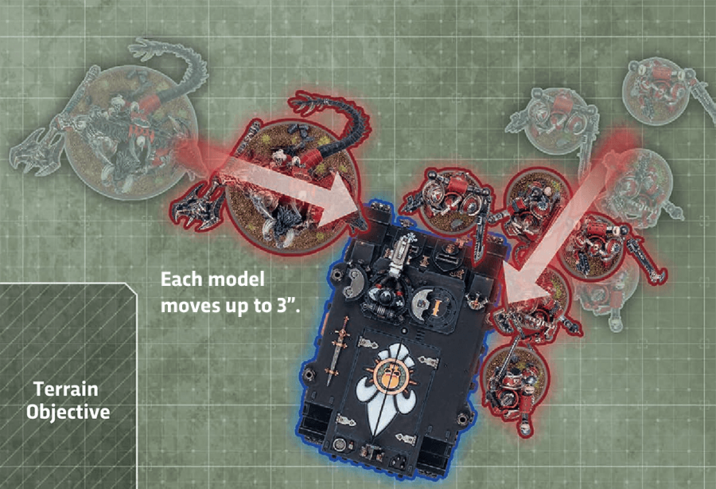
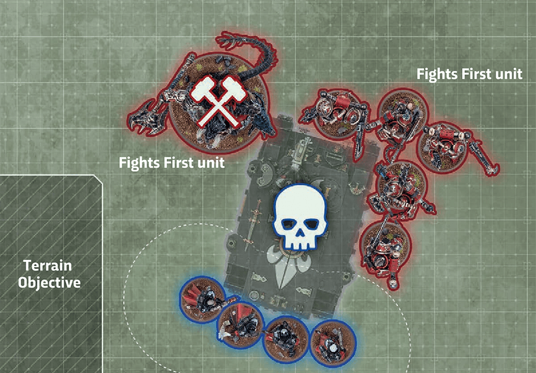
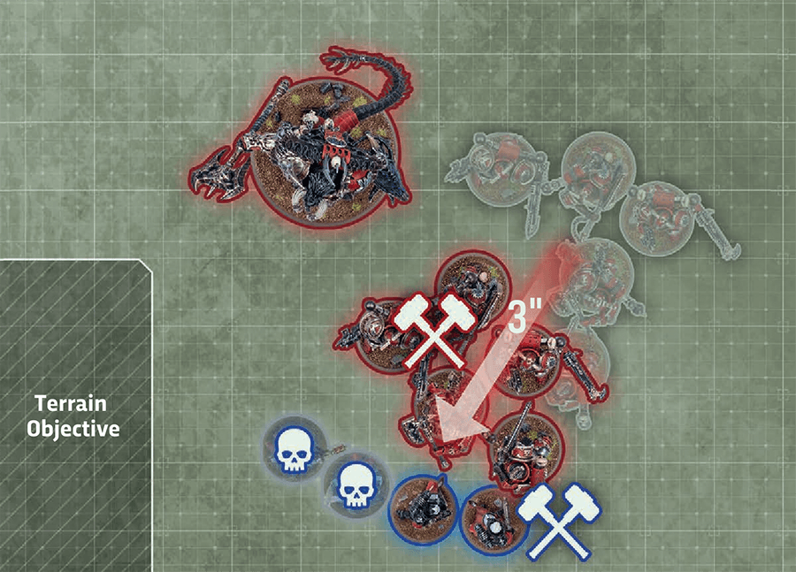
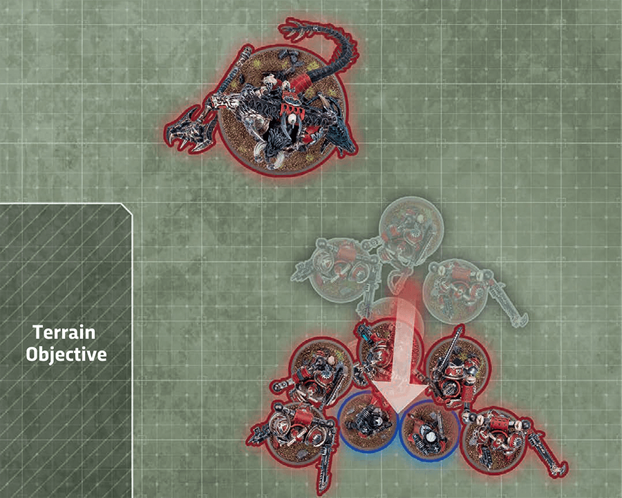
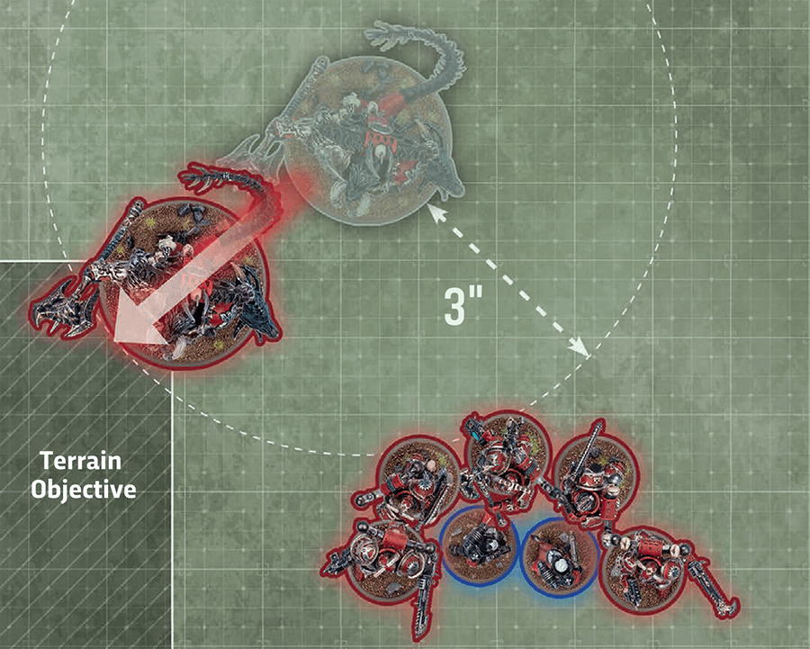

Rules that are triggered at the start of the are resolved now.
DO UNITS HAVE TO FIGHT?
Yes, have to fight with all units that can, but don’t have to or with a unit if don’t want to.
{kind=link}

Fights First, Pile-in moves, melee attacks and Consolidation moves.
Rules that are triggered at the start of the are resolved now.
DO UNITS HAVE TO FIGHT?
Yes, have to fight with all units that can, but don’t have to or with a unit if don’t want to.

Both players make pile-in moves (see below) with all of their eligible units they choose to move. The ‘Eligible If’ section describes which units are eligible to make such moves. The player whose turn it is resolves all of their moves first, followed by their opponent. Each unit cannot make more than one during this step.

MAXIMUM DISTANCE: 3".
ELIGIBLE IF: It is the and one or more of the following apply to your unit:
EFFECT: Your unit moves as described in Moving (03).
BEFORE MOVING: Select pile-in targets:
WHILE MOVING:
AFTER MOVING:
A unit is eligible to fight if it has not already been selected to fight this phase and one or more of the following apply to it:
Players resolve the following sequence until all eligible units have been selected to fight and their have been resolved:
After resolving a fight in the Resolve Remaining Combats step, if there are one or more units that are now eligible to fight, return to the Resolve Combats step.
Fight types are marked with this icon.
During the Fight sequence, when the sequence returns to a player to select a unit to fight, if all of that player’s units that are eligible to fight are more than 5" from all enemy units, that player can instead choose to pass and return the sequence to their opponent to select a unit. If both players pass in succession, or if one player passes when their opponent has no remaining units that are eligible to fight, the ends.
Designer’s Note: Occasionally, all of a unit’s targets will be before they have had a chance to fight, with no other targets close enough to engage with a . In such cases, a player can choose to pass and wait to see if another enemy unit ends a close enough to be attacked later in the phase.
ELIGIBLE IF: Your unit is engaged.
EFFECT: Your unit fights as described in Making (04).

ELIGIBLE IF: Your unit is unengaged, or was unengaged at the start of the but became engaged during the .
EFFECT: Your unit can make one additional , then fights as described in Making (04).
OVERRUN FIGHTS
When a unit makes an , its models can be moved such that enemy units that were unengaged become engaged. Such enemy units become eligible to fight this phase (and may even be able to fight next if they are units).

Both players make consolidation moves (see below) with all of their eligible units they choose to move. The ‘Eligible If’ section describes which units are eligible to make such moves. The player whose turn it is resolves all of their moves first, followed by their opponent. Each unit cannot make more than one during this step.
NEW FOES TO FACE
While using the engaging consolidation mode, your unit can end its engaged with enemy units that have not yet this phase. If so, each of those enemy units will have an opportunity to fight your unit, so think carefully about how aggressively want to move your unit using this mode.


MAXIMUM DISTANCE: 3"
ELIGIBLE IF: It is the and your unit was eligible to fight this phase.
EFFECT: Your unit moves as described in Moving (03).
BEFORE MOVING: Select consolidation mode:
If your unit is engaged, must select this mode and select every enemy unit it is engaged with.
Otherwise, if your unit is 3" of one or more enemy units, must select this mode and select one or more of those enemy units.
Otherwise, if your unit is 3" of one or more objectives, must select this mode and select one of those objectives.
WHILE MOVING:
Models in base-contact with one or more enemy models cannot be moved. Each model that is moved must end its move closer to the closest selected enemy unit, and engaged with it if possible.
Each model that is moved must end its move closer to the closest selected enemy unit, and engaged with it if possible.
Each model that is moved must end its move range of the selected objective if possible, or closer to it if not.
AFTER MOVING:
Each model that started this move engaged with an enemy unit must still be engaged with that enemy unit.
Your unit must be engaged with all of the selected enemy units. If one or more enemy units engaged with your unit have not been selected to fight this phase, your opponent must select each of those units, one at a time; when each is selected, it becomes eligible to fight and is selected to fight ().
Your unit must be range of the selected objective.
Rules that are triggered at the end of the are resolved now.
ONGOING CONSOLIDATION
The RED player makes consolidation moves first. All engaged units and all units that were eligible to fight this phase can make a .
Each model moves up to 3". Models in base-contact with enemy models cannot be moved.
OBJECTIVE CONSOLIDATION
No enemy units are 3" of this unit, but an objective is 3", so it moves range of that objective.
{kind=link}
{kind=link}
{kind=link}
{kind=link}
{kind=link}
{kind=link}